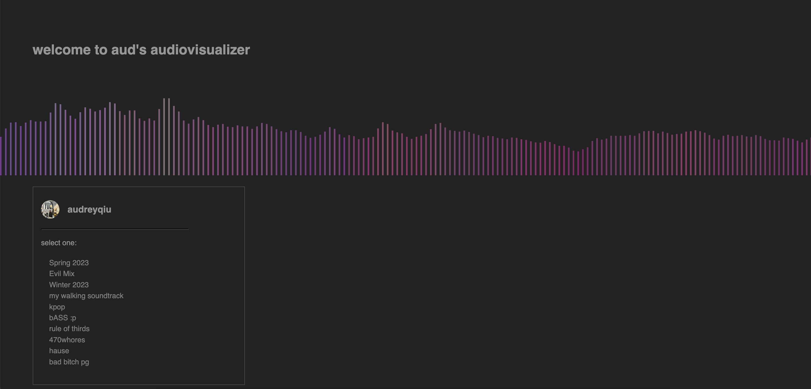
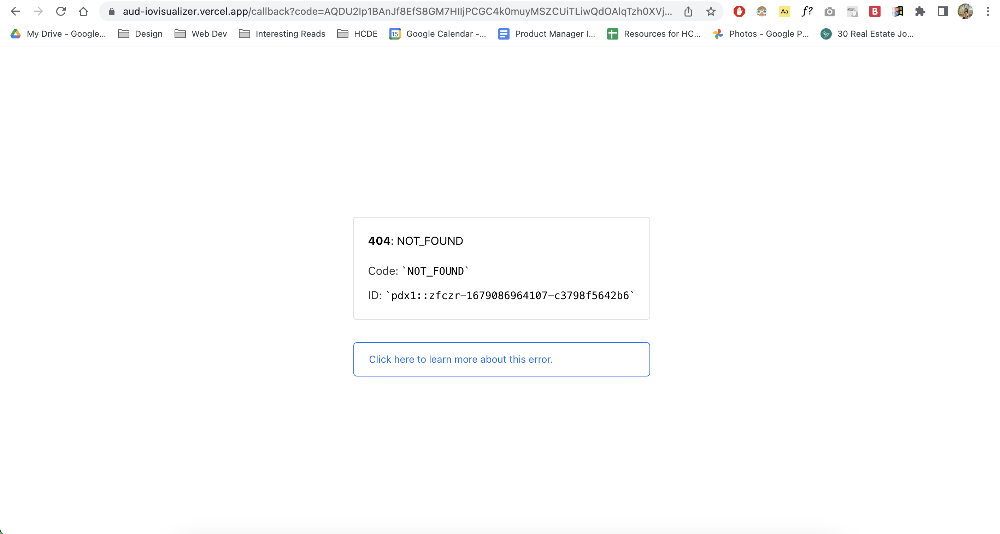

aud-iovisualizer
Overview
My project is a customizable audio visualizer that converts the audio input into visuals. With a Spotify premium account, a user is shown their top 10 playlists and they are able to stream from their account while the application turns it into visuals. This project makes requests to the Spotify API on behalf of the user and displays their playlists, user info, and initiates playback. Due to how I developed this app, I was unable to successfully host my project online. However, follow the steps below to view my project in your own browser.
Prerequisites
- Have a Spotify Premium account
- Open the Spotify Web Playerin your browser on another tab
- Install an IDE, I recommend Visual Studio Code
Steps for running aud-iovisualizer
- In your terminal, navigate to a folder that you would like to download the files to
- Type in the command "git clone https://github.com/audreyqiu2/aud.iovisualizer.git" and wait for the files to download
- Click on the "Go Live" function in your IDE to run a local server
- If a browser page does not launch automatically, navigate to http://localhost:4000/
- Allow the browser to access your microphone when prompted
- Login to Spotify when prompted and enjoy!
Note: you may need to navigate to http://localhost:4000/ again once logging in and granting microphone permissions

Development Process
Main Steps
- Create visualizer with p5 sound and FFT analyze
- Add Spotify integration
- Allow Spotify API calls
- Make the UI for the audiovisualizer
I tried several hosting services to attempt to host my dynamic server side file however, none of the services I tried was able to do so efficiently.
Issue Deep Dive
There were two main challenges I had while completing this project. The first was configuring my server and client side scripts to allow me to make calls to the Spotify API. I used Express and Fetch to do so. There were many challenges with this as I figured out how to navigate the OAuth process and pass data back and forth from the client and server side. Another big issue was hosting my project once it was functioning locally. Since GitHub only allows static hosting, I first tried using Firebase to host my project, however, I kept running into various issues such as Forbidden Access to my own endpoints despite changing permissions to allow for public calls. I then tried hosting through Vercel, which was also unable to correctly configure my endpoints. I went back to Firebase one more time to try it again, but I was gettign the same errors--I was able to access a test endpoint through Firebase, but only if it was running locally. My mistake was waiting until I was fully finished with my project to host the project. Next time, I would host and build my project in parallel to ensure that my endpoints would work throughout the way and that it could be accessed not just locally.
Ideas & Future Ideas
- Adding a playback information widget that allows the user to see what song and artist is currently playing
- Adding different themes that would allow the user to change the color theme of the visuals
Kudos
- Thank you to Raina and Hannah for helping me walkthrough some of the issues I was running into
- Thank you to Noah Krohngold and Cynthia Chung for being my rubber ducks
- Spotify Web API